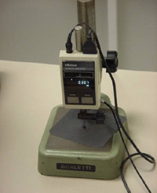
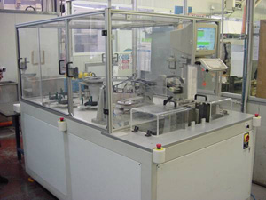

Wafer Thickness Test

Figure: Equipment for measuring wafer thickness with a
digital readout of the thickness in millimeters.
Incoming wafer thicknesses are specified by the cell manufacturer with a certain allowable tolerance, both in absolute thickness and allowable non-uniformity across the wafer surface. Wafer producers sort their wafers prior to delivery to the cell manufacturer using an automated system similar to that shown below. The accuracy of such measurements is usually quite good. However, a cell manufacturer should nevertheless do periodic checks as part of their quality control procedures and will typically use a micrometer or a more sophisticated piece of equipment such as that shown above with a digital readout of the thickness in millimeters.
Thickness measurements are also important following chemical etching to ascertain whether the right amount of silicon has been removed so as get rid of all the saw damage on the surface resulting from the wafering process. Excess silicon removal will lead to wafers being thinner than desirable while insufficient silicon removal will lead to residual saw damage of the surface and likely subsequent deterioration in the minority carrier lifetimes.

Figure: Automated wafer sorting machine based on wafer thicknesses. Wafers
are typically sorted in groupings that range in values by typically as little
as +-5 microns.